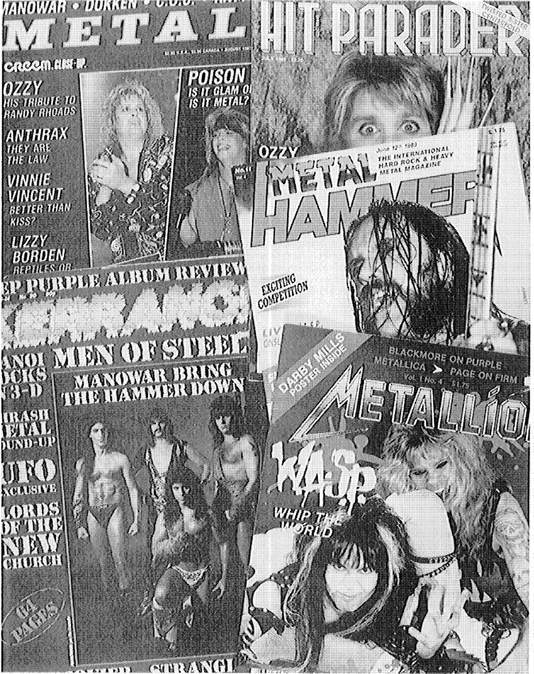

“Denim and Leather”
—Saxon
A journalist describes some California metal fans, guys standing around in a parking lot, in the following way: “They were white kids, stoners, fifteen and sixteen years old, and they wore the obligatory heavy-metal T-shirts. But, more than anything else, their hair set them apart, flowing from their heads in such lush cascades that I was reminded of a Breck-shampoo advertisement. Every ounce of protein in their bodies appeared to be concentrated in their scalps.”1
Travis is big, in a lean and beefy sort of way, with a kind and intelligent look. He is well-groomed, ready to go for a job interview without needing a hair cut. An honor-roll math major at a Chicago university, Travis is a great Metallica fan, even by the standards of Metallica fans, who tend to be a knowledgeable and devoted bunch.
Researchers studying the headbangers at a Houston club noted that “[The] most common attire consisted of black jeans and black T-shirts with heavy metal band logos printed on the front and back. Long hair, not arranged in any particular style, is de rigueur.”2
For a sociology of culture, the audience is essential to the constitution of an art form. Art can be created without reference to an audience, but it cannot become involved in a social system without one. The power of the audience can, in certain cases, reach the point of determining the content and form of the art. In that case the art becomes the servant of the audience’s more general cultural values and mythologies. In contrast, sometimes the audience is simply a mass, created by the manipulations of the entertainment industry. Then the audience serves the industry through the art. In most cases there is a mix of both relations. In order to determine what kind of audience heavy metal has, it is necessary first to consider how audiences can be conceived. Only then will it be possible to define the metal audience in a sociologically pertinent way.
Within the domain(s) designated by terms such as “popular culture,” “mass culture,” “the popular arts,” and “mass media,” assessment of the nature and function of the audience is often biased by aesthetic preferences. Critics and researchers reveal an unfortunate tendency to interpret the audience in terms of the supposed merits of the cultural form that it appreciates. Aesthetic evaluation, based on unexamined assumptions about the cultural form, is used to pigeonhole the audience. This approach was carried to near panic proportions in the period following World War II, by cultural critics such as Theodore Adorno, Edward Shils, and Dwight Macdonald. Although one can safely say that none of these defenders of the traditional “high culture” had listened to heavy metal, they surely would have judged it and its audience negatively. Alan Bloom, who belongs to the contemporary group of cultural elitists, reserves a special circle in hell for rock music. His 1985 diatribe against rock damns its audience in no uncertain terms.3 Priests of the high culture dismiss rock as “brutal culture,” “masscult,” or, more generally, mass culture.
There will be no attempt here to engage the elitists in a war of value judgments. Their approach is normative and the present discussion is sociological. It is necessary to note, however, that elitist criticism, by denigrating the audience, is unable to take it seriously and to see it on its own terms. Sociology cannot be dismissive in this way if it seeks to understand its subject matter.
From a sociological perspective it is useful to consider whether the audience for heavy metal is a “mass,” in an analytical sense of that term.4 For Herbert Blumer, a mass consists of people from a wide variety of social positions, the members of which are not only physically separated from one another but have little, if any, interaction of any sort; they are basically anonymous individuals.5 In Blumer’s sense the heavy metal audience is not a mass since its members come from a narrow range of demographic positions and are often known to one another through their abundant interactions, especially at frequent live concerts and in peer groups that foster devotion to the music. Will Straw remarks of the heavy metal audience that its members have “coherent and consistent taste patterns.” They are distinguished in that respect from “casual audiences,” whose members have “eclectic” tastes.6
Mass audiences for music are generally understood to be “passive recipients of already interpreted songs, nothing more than a collection of isolated ‘cultural dopes.’ “7 But work done by Stuart Hall and his associates in England, and Denzin8 and Grossberg in the United States, among others, challenges the view that rock audiences are passive. Contesting the mass model, writers such as Hebdige, Willis, and Grossberg describe how the audience defines and interprets the music, “bringing it into its own already constituted realities, or ‘uses’ it to satisfy already present needs.”9 The practices and fashions of the heavy metal audience, and its standards for and readings of the music, reveal a very active stance.
If the metal audience is not typically mass, what is it? According to the conventional wisdom, “folk” culture is the opposite of mass culture. The former exists outside the systems of the corporate economy, while the latter is a product of that economy. Most, though not all, of heavy metal exists within a commercial frame. But there is also a profusion of amateur groups, without professional intentions and/or possibilities, which mediate between the world of commerce and the “folk arts.” In folk culture, the distinction between artist and fan is blurred. The performer is not a member of a specialized occupational group, but merely a more talented audience member. The air-guitar stance, assumed by members of the heavy metal audience, both at home alone with their records and at concerts, is a symbolic representation of the connectedness of the artist and the audience. The ideology of metal as a folk art permeates the heavy metal culture, yet the heavy metal world is not a true folk culture.
Neither the locus of a folk culture nor the passive recipient of mass culture, the metal audience stands somewhere in between. Like all spatially dispersed modern audiences, it is not homogeneous, though, as will be shown later, it has a distinctive, persisting, and well-delineated core. Indeed, community is highly valued in the ideology of the metal audience and is visibly represented by its dress code. But close up one sees a myriad of differences. There are subsets of heavy metal music, each with its own partly divergent audiences, distinctive modes of interpreting the music, and variations in the ways in which the music is incorporated into the lives of its devotees. There is metal for born-again Christians and for practicing Satanists, each of whom read the music using codes external to it. Within the music’s code some fans are sophisticated readers, while others are extremely literal. Writing about rock audiences in general, Willis concludes, “It is clear that different groups can be involved with the same cultural items and yet take different homological meanings and effects from them. It is also clear that what a particular group makes of a particular item can change over time, so that what was once accepted is rejected.”10
Geographic, temporal, and subgenre variations may be associated with more or less distinctive metal audiences. One cannot assume that the audience for heavy metal in England matches such audiences in the United States, Japan, or Poland. The metal audience in the late 1980s may not be the same as it was in the mid-1970s. Similarly, the audience that follows classical metal artists such as Judas Priest, Iron Maiden, and Ozzy may not be the same as the audience for thrash metal artists such as Anthrax and Nuclear Assault; and neither of these audiences may overlap with those who appreciate the lite metal “hair bands” such as Poison and White Lion.
Intelligent analysis demands an awareness of these and other distinctions within the audience, as well as a realization that these differences may be more or less significant. In the description of the audience that follows, common characteristics will be stressed, but attention will also be given to significant variations.
Methodological barriers to getting a fully accurate understanding of the metal audience may exist. The research on which this chapter is based relies mainly on intensive participant observation and unstructured interviews. These methods are restricted by space and time restraints, so they have been supplemented with readings in professional literature and the rock and metal press, and with interviews of people who have witnessed metal audiences in other contexts than those to which I have been privy. Yet despite these precautions I have a sense of tentativeness. For example, Kotarba and Wells in 1987 reported that metalheads at metal concerts in a club played air-guitar to get girls.11 This interpretation did not square with the meaning of any air-guitar playing that I had ever seen. I asked people in the metal audience about Kotarba and Wells’s conclusion, and they laughed it out of court. Either Kotarba and Wells misinterpreted their evidence, or the metal fans they observed are different from those with whom I had contact. Similarly, whereas Will Straw contends that metal fans do not read magazines or collect albums, I found a significant proportion of them doing both. Indeed, some of the most avid buyers of used records in the Midwest, at the time that Straw was writing, were metal fans. Was this pattern different among those whom he observed? In light of the fact that the record companies say that their metal back catalogues have always sold well, I find confirmation of, but do not have total confidence in, my observations.
As a distinctive social formation, sharing elements of mass and folk culture, the metal audience is usefully understood in terms of the sociological concepts of “taste public” and, particularly, “subculture.” The idea of taste public was elaborated and employed by American investigators; the idea of subculture is British in origin and, thus far, application. The differences between the two phrases reflect different intellectual perspectives.
As defined by Herbert Gans, “taste cultures . . . consist of values, the cultural forms which express these values . . . and the media in which these are expressed.”12 “Users who make similar choices of values and taste culture content [are] . . . Taste Publics, even though they are unorganized aggregates rather than organized publics.”13 The audience for heavy metal is more than an “unorganized aggregate,” but it is not fully organized. A taste public is “defined primarily in terms of shared aesthetic values, rather than because [its members] choose the same cultural content, for they may choose it on the basis of different values.”14 Gans’s work directs inquiry to the common set of aesthetic values shared by the audience for heavy metal.
The concept of subculture is broader and more useful for the present discussion than that of taste public.15 The theory developed in Britain stresses the activities of the audience, not merely the values of its members. Subcultures are not only contexts of appreciation, but also of the creation of a way of life, including a certain style. One author, discussing members of the Rasta subculture, found that they were typical of those belonging to other youth subcultures since they “were mostly quite young, drew inspiration from music, identified positively with each other, dressed similarly and, most important, emphasized their difference.”16 The work on British music-based youth groups emphasizes the relationship between music and style: “Subcultures create styles which become living art homologous with musical form and which creates its own intoxication.”17 The metal audience is articulated into a subculture with a distinctive style and activities. It is constituted by its members, but is not fully their own.
Of course, the members of a music-based youth subculture are only a subset of the wider audience for the relevant genre of music. Brake notes that “Membership is a difficult problem because there are always righteous, full-time members and part-time adherents, and outrageous styles reduce marginal membership.”18 Grossberg also notes that “being a particular sort of rock fan can take on an enormous importance and thus come to constitute a dominant part of the fan’s identity.”19 For any music-based subculture it is an empirical question as to what proportion of the audience for the genre is made up of members of the subculture.
It would be foolish to estimate the ratio between membership in heavy metal’s audience and membership in the heavy metal subculture. That ratio varies over time and place, and according to the range of music that is included within the genre. However, some generalizations about the relations between these two sets can be made. The ratio was far higher in 1979, when there was little mass-media exposure of heavy metal, than it was a decade later. The ratio is reduced when groups such as Led Zeppelin or Kiss are included in the genre, since these groups attract fans otherwise unconnected with the genre. Where the audience is crystallized into the demographics most associated with an appreciation of heavy metal (where white, blue-collar, male youth form the audience), the ratio will be higher. As heavy metal embraces musical styles from the heaviest to the lightest, from the growled and snarled to the sweetly melodious, from themes of evil and mayhem to those of love (romantic, lustful, and even religious), the ratio declines.
The metal audience can be described in terms of its demographics, the set of structural positions valued so highly by market research. The stereotypical metal fan is male, white, and in his midteens.20 As one journalist writes, “heavy metal fans are usually white working-class males between the ages of 12 and 22.”21 Most are also blue collar, either in fact or by sentimental attachment. This is an accurate external description of the vast majority of enthusiasts for the genre, from its beginning through the mid-1980s. Further, these characteristics form a consistent pattern across geographical settings, although the Japanese and some Latin American fans could not be designated as “white.”
Tastes in popular culture have traditionally been associated with structural position. The point here is not merely to describe the metal audience in terms of its members’ positions in the larger social structure (the market-research approach), but to understand how the demographics translate into the constitution of a distinctive subculture that coconstitutes the metal genre. Heavy metal is not unique in having a demographically specific audience. Pop groups such as New Kids on the Block and the Osmond Brothers have equally narrow audiences, though of a rather different composition. The significant difference between the metal audience and any other narrow audience is that its core is a rather elaborate and long-lived subculture.
To say that the core of the metal audience belongs to a persisting subculture is to go beyond demographics to the level of social groups. The term “subculture” implies an integrity that includes and organizes a variety of elements. The subculture as a whole is more valued by its members than are any of its parts. Each part finds its relative place within the whole.
One might ask whether this description really fits the metal audience. After all, we are talking about a subculture that is named after a musical genre. Perhaps the audience is a sheer creation of the genre and its commercial mediators. Although that is what some disparaging critics like to think, it is not true. Music is the master emblem of the heavy metal subculture, but it is not its meaning. Indeed, from the aspect of the audience, the music is a function of the life-styles and mythologies of a youth group, and must be consistent with those life-styles and mythologies in order to be appropriated by the group. The youth subculture that forms the core of heavy metal provides parameters for the music. Within those bounds artists are free to create and the music industry to promote. But they must honor the culture by, at the very least, appearing to serve it.
Most of the discussion of the audience here will be presented as a general description of the core subculture and its members, leaving out the factor of historical change. This procedure is justified because, on the whole, the subculture remained remarkably stable through the mid-1980s, and continued to be an important, perhaps dominant, factor in the metal audience afterward. But in order to understand the independence of the metal subculture, it is necessary to note briefly how it arose.
The heavy metal subculture is a direct outgrowth from the youth culture of the 1960s. By the late 1960s the youth culture had spilled beyond its origins in the fusion between political protest and romantic hedonism to become a style and a mood, a fashion and an ethos, which could be appropriated by youth outside the colleges and the middle class, the sites at which that culture originated. One subgroup of youth was especially attracted to the ethos of the youth culture, particularly its attitudes of disrespect for authority and its hedonism. Blue-collar, white, male youth found in the styles and hedonistic pursuits of the 1960s youth culture a means of justifying and enhancing their normal rebelliousness against conforming to the disciplines of a social order that did not provide them with privileges or an attractive future. They adopted the long hairstyle, the casual dress, the drugs, and the psychedelic music of the prevailing youth culture, but they preserved their traditional machismo and romance with physical power, which were epitomized by the images of the outlaw biker gang. This hybrid youth subculture, a melding of hippie and biker, began to appear in the late 1960s, but it was unorganized and had no unique forms of self-expression. It was a nondistinctive part of the scene.
At the same time that a blue-collar variant of the youth culture was forming, psychedelic music was getting harder. Indeed, the manager of Blue Cheer, one of the hardest psychedelic groups, was a former Hell’s Angel; straddling two worlds, this manager’s career demonstrates that a hybrid subculture was crystallizing on the level of its music in the late 1960s.22 As the broad 1960s youth culture collapsed and fragmented at the turn of the new decade, both the blue-collar long-hairs and the psychedelic bands were left stranded. Eventually they found each other with the help of the music industry and the result was a heavy metal subculture, in which both audience and music became essential to one another’s definition. The music became the prime representation or emblem of the youth group’s identity because it cohered with the life-styles and mythologies of that group. The important thing to note here is that the subculture was not a fabrication of the popular-culture industry, but existed, in germ, before heavy metal music as a distinctive genre erupted.
The heavy metal subculture, then, is a legitimate offspring of the 1960s youth culture, inheriting and preserving some of its central symbols, attitudes, practices, and fashions, and carrying them forward into the next historical period. Indeed, it might usefully be considered as ruled by an ideal that fuses two of the most powerful signifying events of the 1960s, Woodstock and Altamont. Woodstock, the Utopia of peaceful hedonism and community, and Altamont, the dystopia of macho violence, exemplify the polarity of the 1960s youth culture. The heavy metal subculture borrows from both of them, never effecting a genuine reconciliation of the Utopian and dystopian oppositions, but creating, instead, a shifting bricolage of fashion, ritual, and behavior, which includes elements of each partner in the binary opposition.
Thus, the heavy metal subculture basically represents a preservationist and conservative tendency, the first 1960s nostalgia movement, arising amidst the decay of the 1960s youth culture. Why a segment of white, blue-collar, and male youth should find an ideological home in a nostalgic Utopia is partly explained as a response to declining economic opportunities for that group, whose members faced increasing disadvantages in their lives. They were ripe for a rock-and-roll fantasy rooted in the high times of the recent past. Also, as the general youth culture, which was dominated by white males, fell apart, white, male, and heterosexual youth became socioculturally de-centered by emerging movements of women, gays, and nonwhites. Nostalgia for centricity, then, also had its part in the metal subculture’s conservation of the 1960s.
Considered from the viewpoint of historical sociology, heavy metal music is the master emblem of the subculture of a well-defined segment of youth. Not all those who form the audience for metal are white, male, blue-collar youth. Not all white, male, blue-collar youth are members of the metal subculture. But the core of the metal audience is a subculture whose members have those demographic characteristics, not by chance, but because heavy metal music came to express the Utopian desires, the life-style, and the discontents of a structurally defined segment of youth. There could have been no heavy metal music if there had been no incipient subculture ready to guide and embrace it.
As an expression of a distinctive segment of youth, the metal subculture valorizes the demographics of its membership. Masculinity, blue-collar sentiments, youthfulness, and, to a lesser extent, “whiteness” are values shared and upheld by the metal audience. Moreover, many of the other features of the heavy metal subculture are strongly related to or implicated in these demographically derived values.
It is difficult to determine which of the four demographic factors is the most important in determining the subculture. Together they describe a social position that should be understood as a whole, not analyzed into its components. There are also interrelationships among the factors. Since they constitute a complex, the act of discussing them separately should be recognized as an act of abstraction. Yet there is a general order of importance, moving from maleness, through youthfulness, to whiteness, to blue-collar sentiments.
Heavy metal is a form of rock music, sharing with that larger category an array of features. Various authors have commented on the male orientation of rock culture in general.23 Although it is most evident in metal, “Rock’s following tends to be male; pop fans tend to be younger and female.”24 Frith and Home argue that in Britain rock was a predominantly male interest because, in part, the leading British rock musicians of the 1960s had an art-school background. The romantic ideology that was rampant in these schools stressed a bohemian ideal, which was both masculine and somewhat misogynistic.25 Heavy metal artists did not come from the art schools but were, like their fans, steeped in the rock ideology. In some sense metal is the Ur-rock practice, taking to an extreme many of the ideals of 1960s rock.
Not merely rock, but youth culture as such, tends to be male-oriented. In his comparative study of adolescent culture in the United States, Canada, and Britain, Michael Brake concluded that it is “male dominated and predominantly heterosexual, thus celebrating masculinity and excluding girls to the periphery.”26 Some commentators note two different adolescent cultures, distinguished by gender, “each with its own distinctive characteristics, style, and world view, in which boys are encouraged to settle career and personal identity issues first and foremost, whereas girls are taught that their primary developmental task is to attract a husband and prepare for caring for a family.”27
One can go even further, arguing that males, in contrast to females, tend to form bonding groups with members of their own sex. Writing in 1963, Jules Henry observed that in the United States “Boys flock. . . . Boys are dependent on masculine solidarity within a relatively large group. In boys’ groups the emphasis is on masculine unity; in girls’ cliques the purpose is to shut out other girls.”28 Male culture, for Henry, was centered around sports: “The faithfulness of boys to sports is a striking characteristic of American life. As the season for each sport arrives, the boys are out in the field or in the street playing it with dogged loyalty, and the patter of information about the game is a counterpoint to the determined, excited play. There is a total, almost a religious, community of sport among boys, in which maleness, masculine solidarity, and the rules of the game are validated, year in and year out.”29 His observations—if one substitutes “watching” for “playing”—also apply to male adults. Substitute “music” for “sport” and one gets an idea of the intensity of the heavy metal subculture.
“That the audience for heavy-metal music is heavily male-dominated is generally acknowledged, and statistically confirmed.”30 Even a marginal metal group such as Aerosmith had an all-male following during the 1970s. Steve Tyler, the group’s singer, bluntly acknowledges this truth: “It used to be the only girls at Aerosmith shows were the ones who came to blow us on the bus.” His band mate, Tom Hamilton, agrees: “We used to call our fans the blue army, . . . We’d look out and all we’d see were these stadiums full of guys in bluejeans, a sea of blue.”31
But the heavy metal audience is more than just male; it is mas-culinist. That is, the heavy metal subculture, as a community with shared values, norms, and behaviors, highly esteems masculinity. Whereas other youth cultures and audiences, such as the early-1970s glam rock following that coalesced around David Bowie, and the mid-1980s pop audience for Culture Club and Michael Jackson, countenanced play with gender, heavy metal fans are deadly earnest about the value of male identity. Masculinity is understood in the metal subculture to be the binary opposite of femininity. Much like the religious fundamentalism that denounces heavy metal, the metal subculture holds that gender differences are rooted in the order of things: it is perilous even to question, let alone play with or breach, the boundaries.
Influenced in part by the British biker subculture and the related, though more diffuse, American “greasers,”32 the masculinist model predated metal. Willis’s analysis of the motor-bike boys defines the model: “Their appearance was aggressively masculine. The motorcycle gear both looked tough, with its leather, studs and denim, and by association with the motor-bike, took over some of the intimidating quality of the machine. Hair was worn long. . . . Tattoos on the hands, arms and chest were extremely common.”33
Interpretations of such boys-only groups abound. A feminist assessment understands these groups in terms of male bonding, through which “men learn from each other that they are entitled under patriarchy to power in the culture.”34 Whether this indicates the strength of patriarchy or is a defensive response to the weakening of male hegemony is debatable. In light of the fact that music-based masculine subcultures came into their own at approximately the same time as the late-twentieth-century women’s movement was reaching its peak, one should not dismiss the idea that these subcultures have a defensive nature.
Insofar as male youths have a different set of problems than their female counterparts, expressive activities such as music mean different things to each gender group. Women are part of the problem for males, not only because they are objects of lust but because they symbolize repressive authority in the persons of the mother and the teacher. Even a generous reading of the Freudian Oedipus model, where the mother disappoints as a failed love object, allows for an understanding of the misogyny and male chauvinism that are so prevalent among adolescent males. Young males are, at a minimum, ambivalent regarding women, seeking to escape from maternal and other forms of female authority and fearful of being viewed as “mama’s boys,” and yet attracted to women sexually. Childhood socialization patterns, in which boys are allowed freer rein than girls, make the transition from youth to adulthood more difficult for males than for females. The expected adult role in Western industrialized society is closer to the female pattern of low aggression, stricter conformity to the “rules,” and supervision by adults, such as spouses. Heavy metal music celebrates the very qualities that boys must sacrifice in order to become adult members of society.35
The male chauvinism and misogyny that characterize the metal subculture are tempered by its sense of community. Females who do not flaunt their femininity, that is, who dress in jeans and black T-shirts, and who even more importantly display a love of the music, are often welcomed and treated as equals at such events as concerts. Open hostility of various sorts is displayed toward females who do not conform to the dress and behavior codes. Women who dress in “provocative” attire, such as miniskirts and high heels, are either denounced as sluts waiting to have sex with the band or are ogled as obnoxiously as they might be by the most chauvinistic construction workers. The distinction made by the metal subculture between women who dress and behave according to the masculine code and those who fit feminine stereotypes indicates that it is the culture of masculinity, not biological differences, that is of greatest significance.
The masculinist element in metal subculture is not merely relevant to the attitudes toward and treatment of women. There is also an attitude of extreme intolerance toward male homosexuality. Heavy metal fans “are often vehemently opposed to other forms of music and to acts that display the slightest hint of ambisexuality. Headbangers are notoriously homophobic . . . and generally regard any act that does not go in for metal’s much-macho posturing as beneath contempt.”36 The term “homophobic” is embedded in a psychoanalytic theory that interprets hatred as an emotional response rooted in fear. Whether it is appropriate for characterizing the metal subculture is a debatable point that cannot be resolved here.
During the 1970s the British Skinheads carried the animus against homosexuality into the activity of “Queer Bashing.”37 The metal subculture did not incorporate this violent practice, but expressed its abhorrence for gays by means of more acceptable cultural practices, such as an impassioned loathing for disco music.38 The relevance of and hostility toward homosexuality in the heavy metal subculture is in some sense a reaction of resistance by masculinist interests against the change in dominant values. The gay culture, the source of the mass popularity of disco and disco fashion, came to be admired in the 1970s by the hip culture mavens. At that time, too, the gay rights movement came into its own. Gays “coming out” of the closet were seen by many traditional males as flaunting their “gay culture.”
The masculine mystique that characterizes the metal subculture has many roots, the most important of which is simply the general sexist bias of modern and more generally human culture, which is intensified by the special insecurities of youth. This general tendency is fortified in a historically specific way by the social, cultural, and economic marginalization of white, blue-collar males in the post-1960s era. The heavy metal subculture is usefully interpreted as a defensive reaction of members of this group as their standing and security declined. In this sense the masculinism of heavy metal is the same sort of dialectical negation of the forces unleashed by the 1960s as is the fundamentalist agenda (which also includes masculinism) of metal’s most vigorous foes. But this dialectical negation is not complete. A masculinism that coexists with and is expressed by long hair and the S&M paraphernalia of segments of the gay subculture bespeaks a compromise formation, a bricolage, an unconscious drive to synthesize binaries, to carry on the 1960s, when, for a moment, male supremacy, hedonism, and the rejection of established authorities and codes all seemed to be mutually compatible.
The metal subculture is also characterized by the midadolescent age grouping of its membership. That metal’s audience is overwhelmingly young is not surprising. Audiences for rock music traditionally have been teenagers. For example, a study published in 1984 of 1500 twelve to eighteen year olds who were representative of the national population “found that almost 81% of the students cited music as an important part of their lives. Music was the sample’s fourth highest ranked hobby.”39
Rock music in general responds to the ambivalence of youth. “Caught between the moment of suspended freedom and the transition from dependency to responsibility, the typical dualistic consciousness of youth is modified by the counter-tendencies to sink back into childhood and to advance towards adulthood.”40 “Teenage culture is, in part, an authentic response to this situation, an area of common symbols and meanings, shared in part or in whole by a generation, in which they can work out or work through not only the natural tensions of adolescence, but the special tensions of being an adolescent in our kind of society.”41 People seem to become members of youth subcultures at a structurally meaningful time: “[Membership] occurs in the period between, or near to, the end of the school career, usually at a point when education is perceived as meaningless in terms of a young person’s work prospects, and lasts until marriage.”42
Heavy metal’s subculture emerged from the wreckage of the youth counter(sub)culture of the 1960s. The great consensus following World War II was shattered in the United States by the civil rights movement and then the antiwar movement. The youth subculture, an amalgam of the so-called hippie movement and the free speech movement on college campuses, and a wide assortment of commercial and community-based groupings, emerged in the second half of the 1960s. It spread around the world, including Britain, where it merged with class-based youth subcultures. Symbolized by the audience at the Woodstock Festival in 1969 and by terms such as “the generation gap,” the youth culture was never as all-encompassing as the media, always eager to woo baby boomers nostalgic for their lost youth, would have one believe. But it was a genuine cultural phenomenon that, as it broke apart, released a host of related social and cultural movements, including heavy metal.
A series of events beginning in 1968, some of which were meant to repress the counterculture, shattered its fragile unity. The litany for the United States includes the police riot at the Democratic National Convention in Chicago in 1968, the deaths and disorder at the Altamont Concert in 1969, the National Guard’s shooting of students at Kent State University in 1970, and the end of the draft. Cultural icons died too. “The hippie counter-culture confronted its own demise most dramatically in the deaths of Hendrix and Joplin. With the break-up of the Beatles, the murder of a participant in the 1969 Altamont Rock festival . . . the degeneration into drug-ravaged slums of . . . Haight-Ashbury and New York’s East Village, it became clear even to its adherents that ‘the dream’ was over.”43
The ensuing fragmentation, which led to what Tom Wolfe mis-characterized as the “me decade,” was the environment in which the metal subculture surfaced. Grossman, in his social history of rock music, characterizes heavy metal, which he calls “downer rock,” as a response to the antiyouth crusade. “It appeared that society had formally declared war against the young and Heavy Rock brought forth Downer Rock, a particularly appropriate genre for the times.”44
At least as serious as the undoing of the youth counterculture, and concurrent with it, was the radical change in the meaning of the term “youth” in social discourse. Beyond and indeed in place of its use in referring to a biological or a social group, “youth” became a cultural signifier, referring to a style and a spirit. Through the 1960s the notion of “youth” was anchored to its biological and social definitions; that is, the youth culture belonged to that group in the population that was undergoing adolescent maturation and was moving socially from childhood to adulthood. But then the youth culture got co-opted into the general leisure culture and lost its moorings in a particular age group. It became what semioticians call a “floating signifier,” a designation or identification that could be taken up by anyone as the emblem of a life-style. It became chic for adults to take up aspects of the youth culture in the mid-1960s, but afterwards a youthful image, as defined by the leisure culture, became a normalized component of anything else that might be “chic” or “trendy” or “hip” or “in.”
The fundamental marginalization of young people is reflected in the change of “youth” from a signifier that once designated their particular state of being to a signifier for a cultural category. Having been set loose from its biological and social moorings, “youth” drifts around them, drawing upon their significance but only so much as to remain acceptable for appropriation by anyone of any biological age or social position. “Youth” as a cultural category has been eviscerated and sublimated into a commercialized spirit of “youthfulness.” In the process of becoming a floating signifier, available for appropriation and manipulation, “youth” became detached from young people. Youth in the sense of young people in a special biological and social predicament became marginal to “youth” as a cultural code of beliefs, values, sentiments, and practices.
Young people responded to the extortion of “youth” in a variety of ways. Mainly they merged into the youthful leisure culture as its distinctive representatives. Others, reacting in the manner of tribal peoples who have become deracinated, dropped out of society into depression, becoming heavy users of alcohol and other drugs, and sometimes committing suicide. Some entered cults and authoritarian sects, which set themselves sharply off from the general culture. Still others formed subcultures that raised the symbolic stakes too high for the general leisure culture easily to co-opt them.
The heavy metal and punk subcultures are the two dominant examples of youth attempting to create and hold onto their own distinctive and unassimilable culture. The significance in both subcultures of hairstyles demonstrates the raising of symbolic stakes. Cashmore argues that punk’s major feature was the valorization of youth: “Punks decried anyone or anything connected with the established social order as boring old farts (BOFs). They regurgitated the impulse behind the mod slogan of the 1960s, ‘I hope I die before I get old.’ “45 Although dissimilar on the surface, the heavy metal and punk styles were united at their core by the desire to constitute themselves as unacceptable to the respectable world. They could not be modified, in the way that clothes can, to allow for weekend warriors. Metal and punk required permanent stigmata. The subculture was inscribed on the body. More recently, as metal has itself become somewhat of a floating signifier, thrash metal, a kind of hybrid of metal and punk, has arisen as an exclu-sivist youth subculture by emphasizing elements unacceptable to the vast majority of adults.
Both the metal and punk subcultures borrowed heavily from prior youth cultures. In a highly oversimplified summary, punk took a rave-up beat from early rock and roll, and cobbled it together with inverted features of art-rock conventions. Metal appropriated musical, visual, and performance elements from the hard-rock/biker and the psychedelic musical subcultures. Whereas punk’s transformations were understood, internally and by the critics, as progressive, metal’s appropriations were interpreted, from within and especially from without, as retrograde. Indeed, the heavy metal subculture initially was a movement to preserve the best of the youth counterculture even as it died. Beyond the musical components, heavy metal perpetuated the sense of community, the use of marijuana, and the visual element of performances, among other values and practices. The conservativism of the metal subculture, so abhorred by the critics, is rooted here: “there are few things as conservative and hidebound as a crazed Heavy Metal fan.”46 The metal subculture selected only a small portion of the 1960s youth culture to preserve, but what it chose was genuine. Perhaps the critics of metal simply do not like to be reminded that the 1960s contained both more and less than they wish it did.
What happens to heavy metal fans when they become adults? The metal subculture does not fully include those metal fans who are no longer in their teens. Commentators contend that “Heavy metal was consumed by one generation of teenagers after another; attending a concert, one would rarely find anyone over the age of eighteen or nineteen. Heavy metal, with its deafening volume and proud hostility to cultural and aesthetic niceties, is the primary music of teenage rebellion and, almost by definition, something a listener outgrows.”47
Not everyone seems to outgrow it fully, but evidence of adult metal fans is hard to come by. Adults are not studied as an audience for rock music, except as potential players in the marketplace. It is the high school and college students, who are easily and cheaply available to researchers, whose preferences are measured by sociologists. However, observation of the audience at classic metal concerts in the late 1980s (Ozzy, the regrouped Deep Purple, and Motorhead, among others), revealed a few people who were well past their youth. The rest of the audience not only tolerated these generational oddities, but saw their presence as an affirmation of the metal culture itself.48 The same is not true of audiences for lite metal groups, such as Poison and Ratt, nor for speed and thrash metal groups such as Anthrax, Slayer, and Nuclear Assault. Lite and thrash metal audiences tend to be uniformly adolescent.
The adults who continue to appreciate metal rarely use the metal media, except for playing their old albums. They do not attend many, if any, concerts; do not buy new metal releases or metal magazines; and do not call in requests on the radio. Many do not even play their albums all that much, but they have not thrown them out either. Once part of the metal subculture, they are now like wistful emigrants, living a continent away in another world than their own.
The members of the metal subculture are predominantly white, except in countries with overwhelmingly nonwhite populations, such as Japan and Brazil. The performers of metal music are also overwhelmingly white. As was the case for maleness, “whiteness” is not merely a demographic category but has a cultural significance. That significance is not overtly or even necessarily covertly racist. Indeed, it is less an affirmation of “whiteness” than it is an absence—an obtrusive absence—of blacks.
For Hebdige, “the succession of white subcultural forms can be read as a series of deep-structural adaptations which symbolically accommodate or expunge the black presence from the host community.”49 An affection for black music, found in mid-1950s American teenagers and in early 1960s British youth, was not merely a taste for the inherent features of the music. It also included the delineated aspect of the music’s “black” association, with its connotations of rebellion. Youth was attracted to black music in part because of the myth of the “negro,” who was seen to be unre-pressed, especially sexually—a “natural man.” Prior to rock and roll, trad jazz in the United Kingdom also worked to fuse blackness with rebellion: “For young whites . . . it served as a suitable vehicle for musical protest because its relative musical simplicity and its atavism offended their elders, as did its racial connections, and these shocking factors could be reinforced by the myth of the red light origins of New Orleans jazz and the less mythical association with gangster speakeasies of the prohibition era.”50
Heavy metal emerged at a time when the position of blacks in Anglo-American society was undergoing massive changes. The black power movement in the United States, with its separatist, white-rejecting strains, was in full flower. At the same time, civil rights legislation started to have an impact in housing, in schools, and in the workplace. This, coupled with the severe downturn in the economy, led to a strong sense of resentment against blacks by marginal whites. The situation in Britain was different. Prior to World War II there were few people of color in the British population. In the 1960s Commonwealth subjects from the Indian subcontinent and the Caribbean islands began to move to Britain in large numbers. The out-in-the-street culture of the latter group, in conjunction with the severe recession in Britain in the 1970s, elicited racist sentiment from working-class whites. In the general climate of social tension, white youth had to look elsewhere than black culture to shock their elders.
In both Great Britain and North America, one could look over the vast sea of thousands of faces at a heavy metal concert and fail to find one black person. By the mid-1980s, when a few brave blacks started to enter the arena, they were in the company of their white buddies. I recall speaking with an articulate and intelligent black college student, an avid metal guitarist. His favorite band, Rush, was coming to town, and although he would have loved to have seen them, he was too intimidated to go (He did get to attend their concert the next year and reported no problems.)
The experience of this black fan points up the fact, already noted in the section on maleness, that the metal subculture tends to be tolerant of those outside its core demographic base who follow its codes of dress, appearance, and behavior, and who show devotion to the music. Neither sexist, ageist, nor racist on principle, the metal subculture is exclusivist, insistent upon upholding the codes of its core membership.
Hispanics rarely joined the heavy metal subculture until the late 1980s. The fragmentation of the youth subculture in the early 1970s, which had integrated some elements of Hispanic music (for example, Santana), led to the emergence of a new wave of separate Hispanic music. Salsa and its variants were the musical base of the Hispanic youth subculture. There was nothing in the metal subculture that symbolically excluded Hispanics. Indeed, a number of symbols found in some segments of metal were present in some Hispanic cultures, especially the symbolism of death. In communities in the United States where Mexican youth are in the majority, notably in south Texas, the audience for heavy metal is rapidly growing and the metal subculture is taking root.
Although the white demographic base was not given cultural expression primarily as a racial value, either in the prowhite or the antiblack sense, metal has been associated with a strong ethno-centrism bordering on xenophobia. But while the Skinheads acted out similar hostilities by “Paki-Bashing,” making racial violence central to their subculture,51 the metal subculture was not aggressive in the same way.
Many of the symbols, especially the visual ones, of heavy metal are derived from medieval northern Europe, ancient Anglo-Saxon, and Nordic mythologies. Thus the heavy metal subculture is less a racially based than a cultural grouping, drawing on the symbols of particular ethnic traditions. Emerging at the time of a “discovering and celebrating one’s roots” mania among racial and ethnic groups, particularly in the United States, the valorization of “white” into heavy metal subculture can be interpreted as the creation of the semblance of an ethnic group for individuals who were perceived to be nonethnics in the Anglo-American context. Jon Epstein, studying a group of junior high school students in 1990 in North Carolina, found that their musical preferences were closely allied with race. Blacks preferred rap, whites metal.52
It is generally accepted that the members of the metal subculture are predominantly male, young, and white. Some commentators add that they also tend to come from working-class/blue-collar backgrounds.53 This observation is more accurate concerning England than the United States. Class consciousness and class segregation are far more pronounced in Britain than in the United States. Much of British leisure culture is class-based, whereas America has far more mass entertainments, which are enjoyed by people over a wide range of income levels, occupational statuses, and other class-related positions. Thus youth subcultures that are related, in part, to leisure culture, are more class-based in Britain than they are in the United States.54 But in a cultural sense, heavy metal has a class signification wherever it appears. For the United States, it might be most accurate to say that metal partakes of a blue-collar ethos. Blue-collar mythologies replace the romance of black culture in metal’s syllabus of rebellion.
During the 1970s the working class(es) in the West were under siege. The fierce economic “stagflation,” caused in part by the OPEC oil cartel, seriously hurt those working at manufacturing jobs. Working-class youths could no longer expect to follow their fathers and uncles into the nearby factories. Unions, particularly in Britain, were undermined by legislation restricting their rights.55 The recession was felt to be especially severe because it stood in contrast to the recent boom times of the 1960s. The structural position of youth is most influenced by upturns and downturns in the economy. Punk in England was one response to the deteriorating conditions and heavy metal was another. “The days of affluence were over by about 1976,”56 a year that saw the full flowering of both of these youth subcultures.
In addition to suffering straightened economic conditions, the working class was culturally threatened by the growing hegemony of a middle-class/mass-culture life-style in the mass media. In the United States many blue-collar families migrated from their “rust belt” surroundings, dislocating the sense of community that had existed there for several generations. Brake argues that “Subcultures try to retrieve the lost, socially cohesive elements in the parent culture; they attempt to relocate ‘in an imaginary relation’ the real relations which those in subcultures cannot transcend.”57 Thus, just as the heavy metal subculture was a response to the collapse of the 1960s youth culture, it was also a response to the cultural margin-alization of the working class.
In terms of many of its values and mythologies, the heavy metal subculture is blue collar. The expectations for blue-collar young males is that they will sow their wild oats in a “period of intense emotion, colour, and excitement during the brief respite between school and the insecurities of the early days of working and settling down into marriage and adulthood.”58
The heavy metal audience was never exclusively working class. The older metal fans, those in their late teens and early twenties, were more likely to be blue-collar workers, but a significant portion of high school–aged adherents came from middle-class families.59Nonetheless, blue-collar culture permeated the heavy metal subculture. The separation of the sexes, the boisterous, beer-swilling, male camaraderie, among other features, are rooted in blue-collar folkways. Hebdige interprets part of the heavy metal subculture as a “football terrace machismo,”60 a distinctly male, working-class culture.
By the 1970s the blue-collar romance had the same appeal for middle-class youth that the black fantasia had for an earlier cohort in the 1950s. Blue-collar culture was disreputable. Parents who felt that their middle-class affluence was insecure were outraged when their kids became declasse, just as earlier generations of parents had been appalled by their children adopting “negro” music and styles, or the hippie life-style. American youth cultures, succeeding one another over decades and embracing a variety of styles, all rebel against the bourgeois culture. The process has been aptly characterized as “prestige from below.”61 The middle-class kids who embraced metal were not from the upper reaches of their class. They were centered in the lower middle class, whose members are the most insecure in their standing. There could be few things more threatening for lower-middle-class parents than to witness their sons aping blue-collar manners and espousing blue-collar values.
The class composition of the core metal audience is working and middle class, but the metal subculture is steeped in the blue-colla"r ethos. Ethos, however, need not and does not translate in this case into a political stance. The members of the metal subculture normally do not have the sense of themselves as political actors in the way that the punks did.62 This is a major reason why they are not admired by the graduates of the counterculture who became the dominant popular music critics. In the metal subculture, blue-collar style and sentiments are tied to political attitudes, but these are not progressive in any conventional sense, basically amounting to a cynical animosity toward those in positions of governmental authority. There is a strongly shared antibourgeois sentiment, but this is a remnant of the youth counterculture. For fans, perhaps the worst thing that can be said about a heavy metal band is that it has “gone commercial.”63
The demographic unity of the metal subculture shifted in the mid-1980s. The differentiation of heavy metal into rather distinctive subgenres, especially in the United States, described in chapter 2, paralleled these demographic changes. Overall, the heavy metal audience became de-differentiated. The age group widened on both pends of the midteen norm and wider ranges of the middle class became involved. In addition, nonwhite, especially Latin American, groups entered the audience; and evangelical Christian youth got their own subgenre of metal. Chicago has even given birth to a Gay Metal Society, which might seem to deconstruct the subculture altogether. Most importantly, females became a significant segment of metal fans. This has led in the Chicago area to the formation of the Chicago Women’s Rock Club, the motto of which is “Let ‘em know that you’re no bimbo.” These changes in the demographics of the audience did not impact on each of the metal subgenres uniformly. The audiences for classic metal, which continued traditional heavy metal, lite or pop metal, and speed/thrash metal were as differentiated as the distinctive forms of music that they appreciated. See Appendix B for the relationship between type of metal and gender.
The classic metal audience maintained the demographics described above for the heavy metal subculture, but not as strictly. The audience for thrash/speed metal, particularly those examples of it that integrated many punk elements, became exclusively male and concentrated at the lower end of the age group. Lite metal audiences became almost undistinguishable demographically from pop-rock audiences: they were teenaged, middle class, and included significant percentages of females. Indeed, males were in the minority of the audiences for some groups, such as Ratt, Poison, and White Lion.64 The group Bon Jovi was seen to be the major innovator of lite metal, creating a music which, while specifically aimed at a female audience, did not fully alienate the males.65
The appearance of thrash metal and lite metal at approximately the same time is not a coincidence. The integration of females into the metal subculture through the lite subgenre aided the rise of thrash. Although gender issues do not account for the existence of thrash, the subgenre did spawn a basically male subculture at a time when not only metal, but other traditional male bastions, such as football and stock car racing, were being de-gendered. That is, thrash is a dialectical negation of the de-gendering tendency, attempting to restore the maleness of the traditional metal subculture.
A survey of high school students in a northeastern American city in 1989 reached a conclusion that was unanticipated by the researchers: “Surprisingly, gender is not related to liking heavy metal.”66 Preferences do not amount to membership in the subculture. Nonetheless, this does indicate a shift in the gender distribution of the metal audience, which correlates with the fragmentation of the music into subgenres.
Despite the demographic changes of the 1980s, the original makeup of the heavy metal audience—male, midteen, white, and blue collar—left a deep trace on the metal subculture(s), which continued to valorize and culturalize these demographic categories. For example, female “headbangers” of the 1980s look the part of the male fantasy of the “whore-bitch,” the cliché constantly presented in metal videos.
As a valorization and culturalization of demographic categories, the metal subculture is a child of its time. In a world in which all groups have been de-centered, marginalization tends to become a universal condition. The metal subculture follows the black and Chicano movements in making a strong sense of negative margin-ality a badge of honor by taking as its name an epithet hurled against it. It is a cultural defense for maleness, a ghetto for youth when “youth” no longer signifies the young, a white preserve by default, and a stylization of blue-collar leisure culture. It is the reproduction of a world that never was, but in constituting itself as this yearned-for world it has become a real force in the lives of individuals and even in the environing society. It cannot make the world at large over, but it provides that world with some of its significance and meaning.
In the 1970s the heavy metal subculture was, for the most part, geographically restricted. It originated in Britain, in part because it was British bands that pioneered many features of the genre. In addition, during the last half of the twentieth century, British youth have been more involved in distinctive subcultures than the youth of other countries. Strong class consciousness in British society and lack of opportunities for geographical mobility for British youth contributed to the crystallization of youth subcultures, including heavy metal.
England is split not only along class lines but also along a north/south axis. The heavy metal subculture thrived in the northern parts of the country, particularly in the industrial midlands. Cities such as Birmingham spawned artists and audiences. London, in the south, was never a metal mecca, except when touring bands got to play at its arenas. The heavy metal subculture was probably in existence by 1973 in England, although setting exact dates for its appearance is as difficult as establishing the precise moment when heavy metal music emerged.
Several years later the United States could be said to have a fully articulated heavy metal subculture. Here too the audience was not evenly dispersed, but was concentrated in the large cities of the American Midwest, as well as in medium-sized cities and blue-collar suburbs. These sites were areas where lower-middle-class and working-class whites were more likely to be found. Large coastal cities tend to embrace more “hip” styles. Metal, even when it was new, was definitely not hip, and, as the 1970s continued, the image of metal as antihip became a cliché. Canada’s metal subculture, centering in the Toronto area, was fully in place by the late 1970s.
In Europe, Germany’s metal subculture emerged in the mid-1970s. It was large enough by 1981 to have had an important impact on record sales in the country.67 The spread of the genre initially ran along the northern tier of the continent. By the early 1980s there were well-established metal subcultures in all of the Scandinavian countries, and small ones in parts of Italy, France, and Spain.
Poland seems to have been the first country in the former Eastern bloc to develop a serious heavy metal subculture, partly because the Polish government, in contrast to other iron curtain regimes, permitted the music to be heard. Indeed, the state-run radio stations actually offered heavy metal programs. The appeal of the music to Polish youth is highly complex, mixing more political motives with the basic metal ethos found in the West. With the decline of Soviet imperialism, metal is being avidly taken up elsewhere in Eastern Europe: “When the wall gave way last November [1989], East German rock and roll fans hit West Berlin’s record shops with flying deutsche marks and sticky fingers,” picking up albums by such metal artists as Bon Jovi, AC/DC, Metallica, and Led Zeppelin.68
The spirit of glasnost has allowed Soviet youth access to heavy metal and subcultures are forming there. Their presence was confirmed in 1989, when Ozzy Osbourne and other metal artists performed in Moscow. One hundred noisy motorcyclists “buzzed the Ukraine hotel early one morning until Osbourne indulged them with an appearance.”69 The metal subculture in the Soviet Union is heavily male. In 1989 Francine Du Plessix Gray studied Soviet women and found that they lived in a different world from that of Soviet males. Reporting on a conversation with a teenaged girl, she wrote, “Apart from books, her favorite distraction was ballroom dancing—waltz, tango—but her male friends disdained such music and liked only heavy-metal rock, which she detested.”70
The Japanese took to heavy metal the way they have taken to so many forms of Western leisure culture. Heavy metal subculture was strong enough to encourage major metal tours to include Japan in their itinerary (often combining it with a trip to Australia). As mass merchandising becomes worldwide, metal has gained followers elsewhere in Asia. For example, some computer software pirates in Hong Kong have developed a taste for the music; the owners of a software shop are reported to pass the time bargaining with customers, smoking, and listening to “heavy metal bands (Iron Maiden and Led Zeppelin are favorites).”71
Heavy metal subcultures have grown up, during the 1980s, in many places, such as Brazil and Mexico, that are far from their core sites. What is needed for the emergence of the metal subculture is enough affluence for adolescents to have a youth culture. Indeed, David Handelman argues that whereas the punk rebellion in England “was fueled by lower-class anger and social unrest,” heavy metal seems “a particularly middle-American-youth phenomenon,” because “in America the average middle-class Joe can afford some form of the good life. . . . So instead of roaming the streets, alienated youths cruise the malls, more bored than angry. . . . And heavy metal has caught on as a sort of Lite punk: it smells and tastes like rebellion but without that political aftertaste.”72 Although Handelman is referring to the lite metal of the late 1980s, the audience for which expanded beyond metal’s core audience, his remarks point up the need for elements of a consumer society to exist in order to sustain the hedonistic component of the metal subculture.
But affluence alone is not sufficient for the spread of the metal subculture. There must also be a decline of the native culture’s pull on its youth. If the strength of the dominant religion is strong or if a sufficiently severe political struggle absorbs the identity and commitment of adolescents, heavy metal subcultures will not arise, because there will be alternative channels to hedonism into which youthful aspirations and discontents can flow. For example, the pull of Islam seems to be strong enough, even outside the Middle East, to preclude metal from getting a foothold among Moslem youth. Also, much of the iconography of heavy metal is related to northern European pagan cultures, so where there is native resonance with those symbols metal is more likely to be adopted. There are, however, many points of contact among the world’s mythologies and romances. For example, in Japan it was easy to read the Samurai tradition into metal heroics. Similarly, the focus on death in Mexican and Brazilian culture resonates with speed/thrash metal imagery in particular, especially with that variant known as death metal.
The spread of metal beyond the West, attended by the diffusion of its subculture, has caused a change in that subculture, making it less provincial. Metal’s popularity in non-Western areas has become a cause for rejoicing in the metal community since it demonstrates the universal appeal of the music. For example, Iron Maiden’s trip to Poland in 1984 was greeted in the metal press as proof of the existence of an international metal community. Bands denote their playing schedules as a “world tour,” albums are recorded with titles such as World Wide Live and Maiden Japan, and performers crow about being the first to play in Poland, the USSR, and elsewhere. Here, as at the origins of metal, the demographics of the heavy metal audience are valorized and culturalized. But it is no longer the same audience, although it is still preponderantly young and mostly male.
Just as during the 1980s metal began to appeal to new groups within its core sites, it also became rooted in new sites. But as it has spread it has not lost its ethos. In a social irony, the music that preserved a Utopia for a provincial and restricted group has now become transnational, addressing youth throughout the world who feel thwarted by technological society and frustrated by its demands. If metal is reactionary, it seems that reaction has a firm place in the contemporary cultural bricolage.
A subculture unites its members on the basis of very specific objects and practices, which make the members distinctive both to others and to themselves. The romantic and Utopian themes of the heavy metal subculture, which often make it appear to be a quasi-religion, generate emblems, icons, rituals, and symbols that are particularized as are those of any religious faith. Straw’s conclusion that the members of the heavy metal audience “exhibit coherent and consistent taste patterns which distinguish them from the casual audiences for eclectic, trans-generic examples of rock music”73 is an understatement for those who belong to the core of the subculture. For them, the subculture is the basis of a visible and unique community that nurtures an inner spirit and set of experiences.
Music is the master emblem of the heavy metal subculture. It is its official raison d’etre. But the apparent centricity of the music is deconstructed when what is meant by the term “the music” is examined. Is it the sounds, and, if so, which ones or combinations of them? Is it the lyrics and, if so, does that mean equating lyrics with poetry? Is it the visual elements that have always accompanied the sounds, such as album covers, stage settings, and music videos? Finally, does the music include the memories of the social relations that it seems to nurture? With reservations, all of these questions can be answered affirmatively. “The music” is a bricolage.
The cultural object itself, heavy metal music, is described in chapter 2. Here my specific concern is to explain how the members of the heavy metal subculture integrate the music into their wider life-style. What meanings do they give to it? How do they interpret it? What are their standards of criticism? Love for a certain kind of music is not something inborn, timeless, or spontaneous; such love is nurtured in social relations. In 1982 an Italian terrorist group kidnapped and proceeded to torture an American brigadier general by making him listen to AC/DC. Torturers and tortured, along with the general American public and mass media, held the same negative judgment of AC/DC.74 But metal fans found the incident bizarrely amusing, since they willingly expose themselves to the same music and find it to be pleasurable. It evokes certain emotions in them and expresses and epitomizes their subculture; it has, in Lucy Green’s terms, both “inherent meaning” as a directly valued experience and “delineated meaning” as a signifier of a lifestyle that runs beyond musical expression.75
For the heavy metal subculture the sonic elements of the music take precedence over its textual, visual, or social components. One basic standard is the decibel level of the music. Loudness is valued as an end in itself. References to this feature abound, from the oft-quoted “If it’s too loud, you’re too old,” to song titles such as Manowar’s “All Men Play on Ten,” which refers to the loudest setting on amplifiers and stereo tuners. One metalhead is quoted as saying, “The whole point of heavy metal music is to get out of your mind. The music is always so loud I can never hear the words, but it is just a basic noise to blast your brains out.”76 Although not all fans would agree completely, no one at a metal show would think of complaining that the music was too loud. Those who wear ear plugs, beloved by critics and essential for some musicians, do so surreptitiously.
Pitch is also significant. The audience appreciates the bottom sound, the source of the term “heavy” in “heavy metal.” As a result of the massive amplification of the music and the properties of sound that require lower sounds to be amplified with extra power to be heard equally with the rest of the range, one can physically feel the bottom sounds. They resonate in the chest cavity, creating a sensation cherished by metal fans. The music’s sensibility embodies and epitomizes the culture. The heavy bottom sound connotes masculinity. As in other forms of youth music, notably punk, loud-ness, the source of the power so valued in metal, is a signifier of rambunctious adolescence.
The genre features of a strong vocalist and a technically proficient lead guitarist, whose work is allowed to stand out, are insisted upon by the audience. Fans comment on the guitarist most of all and bands are often evaluated according to the relative greatness of their guitarists. The guitar riffs are a counterpoint to sheer loud-ness and a heavy bottom sound. They are precise, often elaborate, and require much dexterity on the part of the performer. At concerts the audience falls silent and listens in rapt attention to a great guitar solo. Here the music is not merely a noise to blast one’s brains out, but a pattern of sounds that evokes emotions, illustrating once again the complexity of metal as a cultural form.
The subculture’s standards for lyrics are less precise, less articulate, and less shared. Bands such as Iron Maiden and Rush are highly esteemed for their eloquent and meaning-charged lyrics. Groups such as Judas Priest are appreciated for words that give vent to the intense feelings of their fans. Nevertheless, heavy metal is not a genre that privileges lyrics and its followers do not evaluate them as elements in a coherent, fully articulated, worldview.77
The research on lyrics indicates that adolescents neither attend to, know, nor understand the verbal texts of even their favorite songs.78 A sample of adolescents was asked in the mid-1980s whether they attended to the lyrics or to the sound of a song. The results of the study indicated that 12 percent claimed to attend to lyrics carefully, 58 percent stated that they were most concerned with the “general sound” of a song, and 30 percent said that both the lyrics and the general sound were significant to them.79 Females seem to be more attentive to lyrics than males.80 No similar study has been made of members of the heavy metal subculture, but the impression that I get from interviews and conversations is that a large majority of metal fans would agree that, for them, both the lyrics and the sound are important. About a third would cite the music alone. Reviewing the literature on lyric comprehension, Roger Desmond concluded that the research shows that about one-third of adolescent listeners can grasp the meaning of the words in popular songs.81
One of the ways in which members of the heavy metal subculture show their commitment to the genre is to know the lyrics. In metal the lyrics are usually included with the albums, particularly by those groups whose lyrics have more substance than merely “Let’s party!” and “I’m hot for her.” Thus, heavy metal fans are more likely than other adolescents to be familiar with the lyrics of their favorite songs. Desmond indicates that only those who are most committed to a type of music or a particular band are able to recall lyrics.82 But at metal concerts one can hear the audience singing along with the vocalist. In conversation, key phrases from songs are quoted. However, being able to recite lyrics does not imply that one understands or adequately interprets them.
One evening I got a chance to test how well lyrics were understood. I was in the midst of hundreds of rabid fans of the Canadian group, Rush. All were spending the night in the parking lot of a large arena, waiting in line for the ticket office to open at 10:00 the next morning. Most of the fans had arrived well before midnight and stood or sat in the mild night air. The hours were spent socializing with one another, and the major topic of conversation, of course, was Rush. During one conversation I asked two fifteen year olds if they knew Rush’s album 2112. At that time, in 1982, the album was over six years old. “Of course!” came the answer. Everyone in the parking lot knew that album. Did they know the side of the album that was a set of songs telling a story of 2112?83 “What? Of course!” was their reply, in unison. Having discussed the song-set with other Rush fans over the years and having used it as a text in a social theory course I taught, I was intimately familiar with the lyrics. “What’s it about?” I disingenuously asked. The inarticulate responses made it clear that narrative was not these fans’ strong point. Others came over to join in. I let them all talk. Two of those in this initial grouping could fully quote all the lyrics, which is no mean feat. But to speak the words was not necessarily to interpret their meaning, and they knew it. In frustration they asked me what the album was about.
As I described and then explained the story, my efforts were greeted with much enthusiasm. One fan tried to challenge my interpretation, but I was able to show him why his was inadequate. The group dispersed, but shortly afterwards someone else came up and said, “I heard that you really know 2112.” He was the first of a long line that kept me fully involved until the sun came up. I shortened the query, merely asking each the same question: “Which side is Rush on, the priests or the dreamer who found the instrument under the waterfall?” The story is about a theocracy that crushed people trying to express themselves by making their own music. Rush, proponents of romantic individualism, were undoubtedly against the priests. Each person I asked had a 50 percent chance of being right, merely by chance. Yet over 70 percent chose the priests.84 All claimed that they knew the lyrics and many could quote them. The evidence that older listeners understand lyrics better than younger ones was not true for this group, whose ages ranged from fourteen to twenty.85 Other interviews and conversations with metal fans, however, suggested that the general pattern (more understanding as age increases) seemed to hold true.
Most Americans can recite the words to the “Pledge of Allegiance” and the “Star-Spangled Banner,” but they may not reflect very much on their meaning. Knowing the words is part of a ritual that affirms solidarity with the nation, even if the words are only known by rote. Similarly, knowing the lyrics to the songs of one’s favorite group is a pledge of allegiance to the group and a sign that one is a devotee in good standing.
The metal magazines do not dwell on the lyrics. Some reprint them, but few offer interpretations. Attention to lyrics should not, however, be equated with either recall of lyrics or interpretation of them. The words of a song function for listeners, in metal and in rock in general, more as isolated words and phrases than as integral poetic texts. Meaning is obtained from evocative words: “evil,” “black,” “night,” “death.” These utterances are easily distinguishable in the overall sound, are mentioned more than once in a song, and are often more clearly articulated by the singer than other lyrical passages. Creative reading, attending to certain words or passages and ignoring others, is less individualized than it is a function of reading through the metal code.
Lyrics can, and in metal do, also serve a function that is unrelated to providing meaningful symbols, singly or as statements. They provide the opportunity to hear a singer, a human voice. The voice is another instrument in the mix, but in addition it is the primary means of communicating human emotion, again providing a counterpoint to the sheer loudness and resonating bottom sound. Musical instruments can evoke emotional responses in the audience (in metal the guitar often substitutes for the voice by “wailing” and “crying”), but the voice directly expresses emotion. Frith argues, “We can thus identify with a song whether we understand the words or not, whether we already know the singer or not, because it is the voice—not the lyrics—to which we immediately respond.”86
In the heavy metal subculture vocalists with powerful and emotional voices are highly valued. Although they are a notch lower in the pantheon than lead guitarists, great singers such as Ronnie James Dio, Ozzy Osbourne, Queensrÿche’s Geoff Tate, and Manowar’s Eric Adams constantly evoke praise for their pipes. The standard in metal is both a powerful voice that seems to be able to fill an arena even without microphones, and a voice that not merely betrays but is centered on the transmission of emotion. Rob Halford of Judas Priest is well known and lauded for his ability to make spine-chilling screams, sounds that come from another world. In subgenres, such as death metal, the words are not sung as much as they are growled. Although Frith argues that for all rock “tone of voice is more important . . . than the actual articulation of particular lyrics,”87 this statement is especially true for heavy metal.
Appreciation of heavy metal music does not focus on the individual song, as is the case for pop music. Carrying on a practice of the 1960s counterculture,88 the album is the basic unit of appreciation. Fans will discuss the merits of the various albums made by a group. There is a large measure of consensus among heavy metal fans concerning which album presents the best work by any given group.
The visuals of heavy metal music—the band logos, album covers, posters, performer’s costumes, and stage sets; including the merchandising of these visuals on T-shirts, pins, and banners—also help to constitute the subculture. These images and icons, discussed in chapter 2, are noted here as expressions of the sensibility of the heavy metal subculture.
As the master emblem of the heavy metal subculture, the music has a privileged place within it. But the subculture is not exhausted by the music. It also has nonmusical elements that form a distinctive style, giving the core audience a relative independence of and initiative in relation to the other actors in the transaction that constitutes metal. Through the components of its style the core audience becomes essential to determining what metal is.
The term “style” refers to the whole range of ways in which the body is displayed, animated, and chemically influenced. The elements of style are not created de novo, but are borrowed, with or without resignification, from other youth cultures and from the dominant culture. The elements of metal style are mainly derived from two late-1960s youth cultures: motorcycle culture (the bikers in Britain and the “outlaw” gangs such as the Hell’s Angels in the United States)89 and the hippies. As noted earlier in this chapter, it is no coincidence that heavy metal musical and performance styles were cobbled out of the music of these two subcultures.
Metal style is not comprised of arbitrary components, but neither is it unitary. It is a bricolage of its parent cultures, with special additions of its own to mediate the conflicts within its inheritance. The components of style serve social, social-psychological, and symbolic functions. Style differentiates insiders from outsiders, allowing individuals to create identities. By providing forms for expressing attitudes, values, and norms, style takes on the character of a readable text.
Those elements of style that are revealed as visual adornments of the body, are referred to as fashion. More so than in other youth subcultures, heavy metal fashion is male fashion. Although not all female members of the subculture share the same styles as the males, all metal styles are inscribed by the masculinist ideology. The following discussion of metal style, then, demands a special, explicitly secondary, discussion of female style.
Heavy metal fashion involves the metal uniform of blue jeans, black T-shirts, boots, and black leather or jeans jackets. Boots were joined by athletic shoes around 1980, along with baseball caps with band logos. Jeans have become the universal youth fashion, spreading from American teens in the 1950s around the world. With black boots, the outfit is also a blue-collar uniform.
T-shirts are generally emblazoned with the logos or other visual representations of favorite metal bands. The shirts are worn proudly and metal fans feel free to direct brief remarks or a thumbs-up gesture to others wearing shirts depicting a group admired by the viewer. T-shirts that are tour shirts, ordinarily sold at concerts, are more highly valued than those bought in stores, and shirts from long-ago tours are the most highly respected of all. The shirts are a visible sign of allegiance and commitment to a band and more generally to metal as a genre. The older the shirt, the longer one’s commitment. Other ads on shirts are quite acceptable to the metal audience, particularly those for Harley-Davidson motorcycles. This brand is the top-of-the-line motorcycle, big, powerful, and expensive. Few heavy metal fans own Harleys. The Harley is a metal icon, a link with the bikers and thus a symbol of their culture.
Two types of jackets are worn by members of the metal subculture. Best known to the general public is the black leather motorcycle jacket. Basically it is made with heavy leather and has several oversized chrome zippers, including those on pockets and sleeves. Marlon Brando wore such a jacket in the 1950s movie The Wild Ones. Until recently, when the fashion industry discovered biker jackets and created a wide range of modified versions for upper-middle-class adults, the black leather jacket served as a masculine emblem. The jeans jacket, a legacy of the hippie, is more popular than the black leather jacket in terms of prevalence. These jackets are not only far less expensive than leather, they are also light enough for summer wear. Both kinds of jacket provide spaces for an array of patches, buttons, pins, and homemade artistic efforts.
The patches (embroidered band logos) are sewn on to the jackets. They range in size from about three inches to over a foot long. The buttons, from one inch to three inches in diameter, carry logos or reproduce the album covers of favorite groups; a person rarely wears just one. The fabric painting and sometimes embroidery (embroidered jackets are more popular in Britain, where sewing is not stigmatized as a nonmale activity, as it is in the United States) depict band logos or band-related icons, such as Motörhead’s demonic mask.
Pins and rings, which are usually made of pewter or silver, are widely worn, depicting icons associated with heavy metal in general, rather than specific bands. Prominent designs include skulls, skeletons, snakes, dragons, and daggers, maces, and other instruments of pre-gun mayhem. These are symbols of chaos, danger, and outlaws, and are deeply rooted in Western mythology. Leather-studded gauntlets and wrist bands are also worn. Other items of jewelry adorning some metal fans include earrings and necklaces, generally with dangling crosses, although males with earrings are in a distinct minority. The crosses worn span a wide variety of designs from elaborate Celtic to thick iron and simple thin silver, but all are Christian symbols and are explicitly seen as such by their wearers. The Christian signifiers in which the metal subculture is steeped may not function the same way that they do in the discourses of mainline churches, but they are not arbitrary. A significant part of metal’s mythology revolves around the more apocalyptic strain of Christianity, especially the Book of Revelations.
Closely related to the pins and rings, but more colorful, are the tattoos, which are key trademarks of the members of the metal subculture. Dragons are among the most popular icons, along with a wide array of other chaos/monster figures. The usual location of the tattoo is on the arm, since T-shirts permit it to be seen there. Women’s tattoos tend to be smaller than men’s, and are inscribed on a number of parts of the body, including the arms, the upper back, and the area right above the breast. The tattoo is a special mark of loyalty to the metal subculture; it is permanent. It pledges the very body of the adherent to the subculture. The larger and less concealable the tattoos, the more they demonstrate allegiance.90
The body of the member of the metal subculture is also bound over to the subculture by hairstyle, which can be considered as a voluntary stigma.91 From the beginning the metal hairstyle for males has consisted of one simple feature: it is very long. Long hair is the most crucial distinguishing feature of metal fashion. Describing some of his audience to a reporter, a metal musician said that they are “kids with real long hair and leather jackets; you know, the metal heads.”92 A researcher depicting the audience at a venue playing heavy metal stated that “Long hair, not arranged in any particular style, is de rigueur.”93
Long hair is significant because it cannot be concealed. It is the one feature that excludes “weekend warriors,” those with a part-time commitment to heavy metal. Long hair—especially as the other traces of counterculture fashion faded away—became a real sign of heavy metal dedication, a willingly embraced cross to bear. It functions to define the boundary of the subculture.
The metal hairstyle is not past-the-ears long, in the manner of the Beatles, who provoked comment when they invaded the United States in 1964; nor is it the shoulder-length cut that was fashionable in the late 1960s among college students. Metal hair is down-the-back long, similar to and derived from the hippie, counterculture hairstyle.94 The beards also favored by the counterculture did not, however, enter the heavy metal subculture. Beards became associated, after World War II, with the intelligentsia, and that signification clashes with the blue-collar ideology of metal. Long hair did not have such connotations and, thus, could be appropriated directly, serving as a symbolic connection to the counterculture.
Just as other elements of metal, such as the demographics of its audience, began to diversify in the 1980s, so did the metal hairstyle. The advent of music videos as a significant factor in popular music, more than any other cause, created a new metal hairstyle.95 This second style is still very long, but it is cut in a shag or layered manner. Moreover, it is styled after each washing with mousse and blow dryers. The new style has not supplanted the old one, but has been adopted mainly by metal audiences and artists that favor lite metal and by those classic metal artists with wide appeal.
Long hair has reference not only to a prior subculture but to distinctive body movements, which are a functional alternative to dancing. Youth music, in particular, accords danceability high importance, as evidenced by 1950s rock and roll, the dance-craze songs of the 1960s, such as “The Locomotion,” “Twist,” and “Monkey,” and disco and punk music in the 1970s.
Dancing is alien to heavy metal for two basic reasons. One is the continuation of the tradition of the youth counterculture. The audience for psychedelic music and for folk-inspired political protest songs listened while seated, to better concentrate on the lyrics. Second, dance is understood in the modern West as an erotic activity. As a masculinist and overwhelmingly masculine grouping with an extreme heterosexualist ideology, the heavy metal subculture stresses male bonding, not male-female pairing. Thus, it did not appropriate dance as it had been traditionally understood. It also could not redefine dancing, as the punks did, by making it an individual rather than a dyadic activity, because of its valorization of community. Yet heavy metal music is based on a strong, regular beat that calls forth movement from the body. One might sit still for folk or psychedelic music, but only the motor-impaired or those who are extremely repressed will not move to the sound of heavy metal songs.
The solution to the problem of body movement was to create a code of gestural response to the music that could be shared in common. One of the two primary gestures is the arm thrust, usually a sign of appreciation but also used to keep time with the rhythm. The other primary gesture, called headbanging, involves a downward thrust of the head with a gentler upthrust. The move is distinctive enough to metal to serve, by metonymy, as a designation of the metal audience: “headbangers.” Done correctly and with long, loose hair, the downward thrust repositions the hair so that it falls down around the face as one faces the floor. The upthrust neatly repositions it down the back. As one headbanger remarks, the feeling achieved by headbanging is diminished if one does not have long hair: “Shaking your head about to the music wouldn’t feel the same if your hair wasn’t flying all over the place.”96
The metal subculture also fosters the ideal of a specific body type, even if that type is not achieved by the majority of the sub-culture’s members. Muscle building is a hobby of many metal fans; their concentration on their arms creates the look of the idealized blue-collar worker, similar to that iconized in the socialist realist paintings of the Stalinist era. This is not the yuppie-type, health-club body, trim, with a flat stomach. Indeed, among older males in the audience, beer bellies are a commonplace. Individualizing the purchased T-shirt is a frequent practice, particularly by ripping off the sleeves, which is often done in public after purchasing a new shirt. Among blue-collar workers and some baseball players, ripping off the sleeves was practiced by those whose upper arm muscles were so overly developed that sleeves would cut into their skin.
The body type of the typical metal fan is mesomorphic, in contrast to the ectomorphic type found in the punk and hardcore subcultures. A number of factors probably account for this observed difference. Some of them involve the types of movements encouraged by the two subcultures, which are related to the musical differences. With the melding of punk and metal into thrash, these differences are evident in the same venue. The people who stand near the stage, moshing and slam-dancing, are generally skinny, gangly, and more likely to have short hair. Those off to the sides, headbanging or merely standing there, have far more muscle mass, and tend toward the beefy.
A distinctive demeanor and expression are also nurtured in the metal subculture. The familiar insult that metal fans are “slack-jawed,” evincing a look of dull stupidity, needs to be examined. In part it is an accurate characterization of the faces of those emerging from a heavy metal concert, but it also probably could be used to describe anyone who has just spent several hours enjoying ecstatic physical activity. The look also reflects the impact of the drugs (downers) and beer consumed by metal fans. But it is also related to the attitudes of the metal subculture.
Heavy metal is not cool. It is not hip. As a social construction, the facial expression of the member of the metal subculture toward outsiders is a rejection of hip-ocracy. Look at the countenance of those who are into a cool and a hip subculture, and you will notice an expression of studied indifference common to the former, and an expression of sneering alertness for the latter. The slack-jawed look is neither indifferent nor alert. It often accompanies the self-described state of being “wasted.” If you are wasted, you are not available to the everyday world, nor are you setting an example for it. You are simply out of it. The other key expression of the member of the metal subculture, the eager look of the ardent enthusiast, is only for insiders. This face is put on not only at concerts, but while listening to favorite songs or even talking about admired artists or their work. Parents, teachers, and the world in general are not privy to this second expression.
The walk of metal fans is less distinctive than their gestures and expressions. It is not the walk of the fleet-of-foot athlete or the graceful gait of would-be dancers. The term “lumbering” might be an appropriate adjective for a walking style that resembles the movement of a weight lifter. It reflects the masculinity of the culture.
The metal style is a surprising blend of the assertive and the laid back, a blend that can be traced to its dual origins in the biker and hippie subcultures. The same person can by turns be ecstatic and wasted. These extremes are probably only possible for young, resilient bodies, which are also capable of absorbing intoxicants and bounding back to vitality. Alcohol and drugs play a role in the heavy metal subculture, defining another aspect of its independence from determination by the music and setting restrictions for the music.
Metalheads’ substances of choice are beer and pot, the former taken over from the bikers and the latter borrowed from the hippies. Use of other “downers,” especially Quaaludes, is not uncommon. Drugs and alcohol are commodities to be bought and consumed, but they are also symbolic objects, the meanings of which are integrated into the rest of the subculture. Further, they are mediating materials, physically or at least psychopharmacologically, standing between the user and the external world.97
Ingestion of massive quantities of beer has remained a constant feature of the metal subculture. In Britain, metal festivals are notorious for the urine-filled containers tossed at acts that are not appreciated. Fearful of flying bottles, or at least worried about insurance costs, American venues serve only paper or plastic containers. These are often outsized, with quart tubs being the containers of choice. Beer-induced urination has influenced at least one venue in the United States to spread large amounts of kitty litter in the area near the stage.98 “Beer drinking and hell raising” is a motto of the metal style.
Beer and pot are not ritualized substances for concerts only. Hanging around, in their rooms or out in the street, metalheads drink beer and smoke pot. A high school junior who entered the metal subculture in 1978 in Chicago told me that it was mainly the pot that attracted him. The music, at least initially, was secondary. He listened to it because “it just went well with the dope.” Since the “War on Drugs” began in the late 1980s, the use of marijuana has markedly decreased at concerts. Prior to that time the aroma of pot permeated the air.
The use of pot and downers in the heavy metal subculture works well with some aspects of the music. Although metal is not drug music, specifically intended to augment a drug experience in the manner of psychedelic music, it is conditioned in part by the sensibility fostered by “downers.” Metal’s guitar solos are a modification of psychedelic music and are best appreciated while in a laid-back mood. That marijuana is outlawed also adds to its appeal, corresponding with the “outlaw” image of metal itself. Further, the danger of arrest for possession of a controlled substance works, like the stigma of long hair, to enhance group solidarity.
Drugs are an important part of the metal subculture, but they have never gained the symbolic centrality that they had for the youth counterculture. In his excellent ethnological analysis of British hippies, Paul Willis concludes, “Drugs were just about the central topic of conversation on the scene, and great stress was laid on knowledge of various types of drugs.”99 “Though drugs were only keys, they were still accorded a kind of sacred place in the head culture. Their use was surrounded by ritual and reverence.”100
In the metal subculture drugs are less fetishes than means to the experience of getting wasted, which involves a unique mixture of activity and relaxation, in which the heavy music is counterpointed by the downer drugs. The aim is not to take “a journey to the center of your mind,” as it was for the hippies, but to reach a state of physical and emotional catharsis. That is, drugs are not valued as providers of self-knowledge or of exotic experiences, but as a source of release through ecstasy. Here the subculture is greater than its discrete components, each component contributing to a distinctive experience.
The metal style, from the clothes and hair, to the formed and moving body, is male. A summary reading of heavy metal fashion reveals menace, male menace. It is of, by, and for males. Yet there have always been some girls among the sea of boys at heavy metal concerts. Attendance at concerts is the central ritual of the metal subculture. The vast increase of females, especially at lite metal concerts, has already been noted. But it remains the case that most of the female fans are marginalized in the sense that they are less likely to attend concerts. Their activities take place, as is the case for most girls, in the home. There they can listen to the music, read the magazines, and be active in the fan clubs.101
Females in the metal subculture are at all times, as Bashe states, “divided between those who dress like the boys and those who try to emulate the bitch goddesses they see in their heroes’ videos.”102 Thus, some girls wear the jeans and black metal T-shirts, along with black leather or jeans jackets. Others are attired in leather miniskirts, spiked-heel shoes, and an array of cleavage-revealing tops. Both outfits are generated by the masculinist code, either as male fashion or as male fantasy.103 The point is that there is not a metal style that females can wear as subjects the way that their male counterparts can. The same item, be it a black leather jacket or very long hair, is read differently, does not have the same meaning, when the wearer is female.
Women are also fond of wearing spandex pants, favored by many metal performers, but not emulated by male metal fans. The pants graphically display not only the gender, but also the anatomical differences between the sexes. Heavy metal style is masculine, and women who want to become members of the metal subculture must do so on male terms. This situation is not unique to, but is extreme, in the heavy metal world.
Women are aliens in the heavy metal subculture because of their otherness. Males do not bond with them through identification. The desire for community (a mechanical solidarity in Durkheim’s sense) is a value central to the heavy metal subculture. For youth groups in general, from ghetto gangs to cliques in middle-class high schools, the feeling of belonging to a community of people “like you” is basic.104 In the case of the heavy metal subculture, nostalgia for the worldwide youth culture of the late 1960s adds to the premium placed on community. But the definition of the community is not exactly the same as it was in the counterculture. A blend of biker and hippie signifiers, it can be likened to an enormous male-bonding group.
The valorization of community does not, of course, mean that a community, in any strong sense of that term, exists among the far-flung members of the metal subculture. The facts indicate that the members of the subculture tend to lack any active political stance, that their ideals are hedonistic, and that they are widely dispersed geographically. All these realities prevent the subculture’s members from cooperating in sustained, practical projects or from extending their interests beyond a shared love of the music. That love gives rise to mutual recognition when members of the subculture meet, but, for the most part, “community” among members of the subculture in general is attenuated and narrow. A stronger and more multifaceted community exists in small peer groups and an approximation to communion emerges at concerts. In both cases male bonding is a prominent element of the solidarity.
Even if he has a girlfriend, a heavy metal fan prefers being with his buddies when participating in the metal culture, whether the activity is seeing a concert, listening to records, or talking about the music or the performers. Many of my informants sneered at the types of music—often as different from heavy metal as possible—that were favored by their girlfriends. Why, when heavy metal was so crucially important in and to their lives, did they choose a girlfriend who did not share their musical taste? The responses were more or less articulate, along the lines of “she’s a girl.” They not only expect girls to dislike metal, but seem to prefer that it be that way.
A study done on Indiana University students by Zillmann and Bhatia helps to explain this response. The investigators showed students videos of people who were to be judged as potential dates. Several versions of the video were prepared, varying only the musical tastes expressed by the potential dates. Thus the same potential date was seen by some groups as preferring classical music, by others as favoring country, by others as liking soft rock, and by others as preferring heavy metal. Zillmann and Bhatia found that a penchant for heavy metal boosts a man’s chances with women, but severely reduces a woman’s desirability to men. Women preferring heavy metal were judged to be the least sexy, cultured, beautiful, and exciting. The researchers speculate that the features of heavy metal (“emotionally excessive rock music”) are associated with those who prefer that style. Males are enhanced by this association, since masculinity and power are linked to the music’s emotionality. In contrast, power is judged to be antithetical to femininity.105
The shared demographics and especially their valorization and culturalization serve to unite the subculture. They are the matrix in which the members of the subculture become an ongoing social formation with distinctive social practices that create a solidarity.
Some of the social activities that constitute the small groups and transient communions that embody the metal subculture are directly rooted in that subculture. Primary among them is the live concert experience. A plaintive letter sent to Circus magazine gives some indication of the significance of concerts. The writer, an eighteen year old, lived in Nebraska, far from any concert venue: “I live, eat and breathe metal, but I’ve never been to a concert.”106 Like the religious rituals analyzed by Durkheim and Eliade, concerts are, for the audience, celebrations of the subculture itself. The physical expression and social transmission of the culture, somewhat unmediated by the mass media, occurs here. The audience feels itself as one quite palpably.
The lack of a heavy metal radio format and, for the first decade of the subculture’s existence, the lack of other mass media serving heavy metal necessitated interpersonal recruitment into the subculture. A consequence of the absence of institutional mediation, which allows for participation of isolated individuals in a subculture, was to strengthen the role of the peer group in the constitution of the how prior to the mid-1980s they found out about their favorite band, and the response is the name of some friend or an older brother who “turned them on” to the group. Years later they still recall, with much gratitude, that person. The bonds between particular people are extended to loyalty to the subculture, giving that subculture an endurance and persistence that other subcultures that depend upon institutional mediation lack.
The heavy metal subculture is noted for being culturally conservative, a characteristic that can be traced in part to the importance of interpersonal relations in its constitution. Its standards and its music, its styles and performers, transcend several “generations” of adolescent audiences. Record labels and concert promoters did not have to worry about new trends: the old bands continue to sell their back catalogues of albums and to sell tickets to their current concerts without needing much promotion. Cashmore asserts that heavy metal is “a dinosaur of youth culture, surviving its contemporaries and lasting seemingly without change into the 1980s.”107 Changes are, indeed, resisted by the audience, a reality that demonstrates the residual power of the audience over the constitution of the music. For example, when Judas Priest attempted to modify its sound, using elements associated with pop disco, the fans denounced the Turbo album. Chastised, Priest’s next effort, Ram It Down, was a return to their traditional sound.108
The development of new metal expressions in the mid-1980s (lite metal and thrash) was also met with much hostility. Lite metal bands were called, among a host of other derogatory terms, “poseurs” and “poodle bands.” Cries of “death to false metal” emphasize the heretical nature of innovation. This conservatism, rooted in romantic preservationism, creates an ongoing subculture, sharply distinguished from the mass culture of pop music. Pop is a sound made by a bubble that bursts almost as soon as it emerges. Metal shares conservatism with several other music-based cultural groups, such as Deadheads and fans of country music.109 Older members initiate younger ones into the rituals and the lore of heavy metal, fostering a stronger sense of community than short-lived subcultures.
One should not underestimate the impact of the constant barrage of ridicule heaped upon metal as a factor engendering solidarity among members of the subculture. “The more the music was ridiculed . . . the more firmly welded together the audience became, and the more desperately it attached itself to [the music].” Ronald Byrnside was referring to rock and roll in the 1950s, but his remark is even more applicable to heavy metal.110 The unremitting disdain shown by rock critics, from the beginning, for the genre and its adherents enhanced the solidarity of the subculture. When the genre was losing much of its cohesion in the mid-1980s—because of genre changes and the impact of MTV—the PMRC’s attack on metal worked wonders to reinvest the subculture with a strong solidarity. Tipper Gore’s name was mentioned in scorn at so many concerts that it quickly became a cliche. Recrimination and ridicule of heavy metal has only underscored the proud pariah status of the subcul-ture’s members, resonating with the outlaw imagery found in the music’s lyrics and the visual elements and fashions of the subculture.
The solidarity of the heavy metal subculture is due in no small measure to the fact that it is a seed around which peer groups can crystallize. Most junior and senior high schools in the United States are divided into cliques, which differentiate themselves from one another on a number of bases that may overlap, such as social class, major interests, and school achievement. Cliques must adopt conventions of style that set them apart, “much as various aboriginal tribes mark themselves with symbols of inclusion and exclusion, with tattoos and ritual inscriptions.”111In schools there is pressure “to accept a tag stating your name, rank and musical preference.”112
In 1990 a varied group of midwestern college students consisting of people who attended high school since the mid-1970s, was asked to describe the characteristics of those who attended their high schools and listened to heavy metal music. All respondents were able to do so. Most referred to cliques that were not identified by musical preference. With the exception of those who graduated before 1978, the term “stoner” and/or “burnout” was the designation used. Moreover, musical preference was perceived to be associated with a number of other features, such as use of marijuana, distinctive fashion, and school achievement.
A 1989 graduate from a public high school writes, “The heavy metal listeners were known as ‘stoners,’ ‘headbangers,’ ‘druggies.’ Characteristics—males—long hair, one earring (skulls and cross-bones, daggers, etc.), ripped jeans, dirty old high tops. Females—long hair—either very ‘poofy’ or flat feathered sides and long in back, a lot of makeup—especially around the eyes—dark black eyeliner ‘raccoon eyes,’ many earrings and also ear clips, tight faded jeans or tight short skirts and the skimpiest tops allowed or concert T-shirts. Both [males and females] heavy metal concert T-shirts (usually black) with skulls and other ‘evil’ symbols; many also had vulgar or offensive language. They were the trouble makers in school, often being sent to the dean, in school suspension, detention after school, etc. They were also typically in the more remedial type classes whether they needed to be there or not.”113 A 1984 graduate of an upper-middle-class high school in Indiana agrees with this description: “The kids who listened to heavy metal music were referred to as burnouts. The burnouts generally had long hair and wore black clothes. Around school they could always be found in the smoking block, a section designated for smoking. The burnouts did use marijuana a lot but I don’t believe any more so than the other groups.”114
Another student, a 1982, suburban, middle-class graduate reports, “In my high school, the kids who listened to heavy metal (Led Zeppelin, AC/DC, etc.) music all dressed in a similar fashion—old blue jeans, concert T-shirts, untucked flannel shirts, and longer hair than most. They were withdrawn from the ‘activities-oriented’ crowds and the only overlap was for boys in some sports. In retrospect, they were a pretty close-knit group and did most things together.”115
These descriptions support the view presented here that the heavy metal subculture is distinctive and marginalized from the mainstream. A 1989 graduate from an upper-middle-class suburban high school makes this point clearly: “There were heavy metal, burnouts, students that definitely stood out in relation to the majority of the ‘normal students.’ They stood out because they wore long hair—possibly greasy—and tight jeans. They usually smoked in the bathroom and on occasion drank in the bathroom. Some of them, more than likely, used marijuana.”116
School peer groups are cohesive units, reinforced by day-to-day interaction and shared social circumstances, and by common leisure pursuits and fashions. The statements above show that the heavy metal subculture is not merely a set of signifiers and practices referent to a musical form. It is much more a total life-style that includes music as a prime component, but uses the music to express and foster a sense of life. It is important to remember, however, that not all of those who follow the music are visible members of the subculture.117
The place of music in constituting peer groups and the youth subcultures that form their matrices has not been studied systematically. Most of the literature relates to crime and delinquency, and therefore gives a biased reading of the peer group. We do have studies that look at musical preferences and relate them to demographics and (self-reported) delinquent acts.118 Such work, however, does not reveal whether the delinquency is caused by the music or the musical preference is caused by the delinquency, or whether both are caused by one or more other factor(s). Other research finds heavy metal to be the favorite format of students in vocational tracks and of those with emotional and behavioral disturbances.119 A study of a group of adolescents called “The Ston-ers,” who were involved in or professed a belief in the occult sciences and/or Satanism, indicated that they were also deeply involved in heavy metal rock music and street crime.120 This fragmentary literature is at best suggestive.
The mass media’s sensationalized descriptions of youthful murderers often include reference to musical preferences that fall outside the mainstream. The unsophisticated reader tends to interpret this information as indicating that those who listen to those forms of music are likely to be emotionally disturbed, Satanists, or murderers.
Roe, studying Scandinavian high school students, argues that the peer groups are fundamentally “achievement-related subcultures [that] may then form distinct orientations toward the media in general and preferences for certain kinds of music as well.”121 He finds that “low school achievement leads to a greater involvement with peers, leading to a greater preference for socially disapproved music.”122 American and British students who are members of cliques associated with the heavy metal subculture are not distinguished by their academic excellence. Roe contends that the music functions to express symbolically “alienation from school.”123 The sense of alienation in general and an active dislike of school in particular is one theme that does characterize heavy metal, speaking to the marginalization of its core audience.
Peer groups mediate the full array of cultural phenomena to their members. They are the collective bricoleurs selecting such specifics as a subset of bands, preferred readings of lyrics, and details of fashion from the whole of the heavy metal culture. Within the heavy metal peer group—a group of teens who are friends and all “into metal”—there is some degree of specialization. Each member tends to specialize in the band they hold to be the best, although they are careful to say they appreciate all of the groups favored by their friends. The metal subculture is polytheistic. Fans genuflect before all the metal gods, but also reserve special worship for one or a few personal favorites. When talking about a group, a person will often defer to the expertise of a friend whose god is that group. “You gotta speak with my buddy Paul. He’s really into Nuclear Assault and knows all about them.” The constant chatter on which is a group’s best album or which lineup worked best reflects deference to specialized authority: “Well, my friend Jim, who is really into Maiden, says that Number of the Beast is their best album.” When the peer group is very small, with only two or three close friends, they may all be into the same band. But even here specialization continues to be important. One member of the group is judged to be the most knowledgeable about the band, in terms of gossip or knowledge of which song is on which album.
The music is taken seriously by the metal subculture. It is the master emblem of the subculture, epitomizing what is precious and good in it. That is why the subculture is accurately designated by a musical term rather than by another special term, even one that preserves its binary character, such as a “hippie/biker” subculture. It would be true to call it a hippie/biker subculture but that term would not indicate that the music provides an experiential, aesthetic, and mythological, though never a logical, synthesis of the opposed elements. If the core personal type cultivated by the subculture is the proud pariah, then it is the music that supplies the pride. In the case of metal as a music-based youth subculture, the music legitimizes and transvalues pariah status, and then redeems it. Thus, metal is, in one sense, just an element in a wider hippie/ biker culture, but, in another sense, it is what gives that subculture its integrity.
“Loud and proud” is a metal motto. Pride is instilled in the core metal audience, on the level of meaning, by the way in which the music represents the subculture to its members through signifiers. Metal bands make it a point to mythologize themselves, continually stressing their musical prowess and their exemplary exploits. Boasting is no sin in the metal world. Artists boast about themselves, fans boast about artists, and artists boast about their appreciative and loyal fans. The praise of the band for its audience fills its members with an esteem they often receive nowhere else. It is a validation of themselves.
But the band does more than praise the audience. It also creates the aura of the hippie/biker subculture through lyrical messages, appearances in public and on videos, and reports of its life-style in the metal magazines and the more general press. As John Clarke observes about youth subcultures in general, each of their symbolic objects “must have the ‘objective possibility’ of reflecting the particular values and concerns of the group in question as one among the range of potential meanings that it could hold. It also requires that the group self-consciousness is sufficiently developed for its members to be concerned to recognise themselves in the range of symbolic objects available.”124
Flaunting the life-style valued by the metal subculture—sex, drugs, and raising hell—with pride before its fans, the band romanticizes and idealizes that life-style, and, even more importantly, legitimizes it. The signifiers of pariah status—everything that the respectable world condemns about metal’s audience—are endowed with the highest value. The pariah is transvalued into, as Ozzy Osbourne calls his own persona, “a rock and roll rebel,” someone who rebels against the established authorities through rock and roll, who finds a positive ground to contest established authorities in metal music itself and in the subculture that, under this aspect, the music serves. As legitimator of a youth subculture, the genre of metal music is shaped by the core audience, coconstituted by it, more than it is under any of its other aspects. Metal must present the subculture to its members in an appealing way. Otherwise it cannot make the pariahs proud and transvalue their status. That is, the members of the group must recognize themselves as valuable “in the range of symbolic objects available.”
The legitimizing function, however, is not the only way that the music instills pride in its core audience. If there was nothing about the music that gave inherent meaning to the audience rather than merely hyped-up delineated meaning to romanticize its life-style, the pride fostered by metal would be empty because there would be nothing to be proud of. But the members of the metal subculture are convinced that metal music is great. It is great as music for what it does to them—how it draws them into it, excites them, and finally leaves them wasted, completely spent, having burned the potlatch of their youthful vitality and purged their emotions.
Those who claim that metal does not evoke a great experience are met with disbelief by an enthusiast. Their judgments on metal cannot be taken seriously and the rest of their judgments on life are therefore suspect. The deepest pride of the member of the metal subculture is to be an appreciator of great music. The music is viewed as a gift of the artist. The obligation, willingly undertaken, of the appreciator is to give the artist loyalty. And here an anomaly appears in the conventional account, in both popular and academic literature, of the metal audience. Some of the same adolescents who are called “downers” or “burnouts” are the ones who memorize lyrics, specialize in groups to follow, and make fine judgments about the merits of the music. In this realm, at least, they do not merely live for the moment, withdraw, take the easy way out, fall into depression, or make trouble. Here they are certain of their standing and are willing to exert effort to keep something worthwhile going. They transcend hedonism, even if ironically, in the name of hedonism, which is what all authentic lovers of a cultural form do. Under this aspect of pride, the music does not serve the subculture, but the subculture serves the music.
This reciprocity of service, music-to-subculture and subculture-to-music, is the inner form of the music-based subculture, of which the heavy metal subculture is a paradigmatic example. Metal is the music of the members of its subculture, it is their music. And it is theirs in many ways—as an idealized representation of the life-style of their subculture, as the music that provides them with cherished experiences, and, because of those services that it renders to them, as something that they can serve through their loyalty. Metal represents, legitimizes, and redeems the members of its subculture. That is the meaning of metal for its audience.
